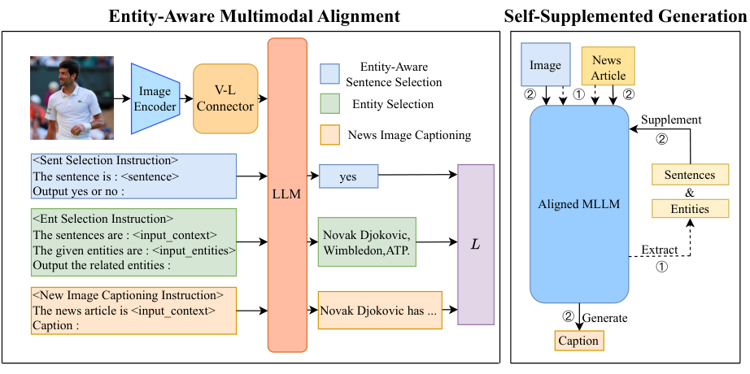

TOMM 2026Multimodal learning · News captioning
EAMA: Entity-Aware Multimodal Alignment Based Approach for News Image Captioning
News captions need names and events that an image alone cannot reveal. EAMA teaches a multimodal model to find relevant entities before writing the caption.
Naming the scene requires evidence beyond the pixels
An ordinary image caption can say that a person is speaking at a podium. A news caption often needs to identify the person, the event, and the circumstances. Some of those facts are not visually recoverable, while the associated article may mention many people who are not pictured. The task therefore requires selecting the right relationship between visual content and textual entity information, rather than merely producing a more detailed visual description.
EAMA identifies a second tension: more article text is not automatically more useful. A long article contains names and facts that may help, but also material unrelated to the image. Truncating the article risks removing the needed identity; passing the whole article can bury it. The proposed solution teaches the captioning model to extract a compact set of useful sentences and entities before composing the final caption.

The ablation distinguishes learning to select from simply reading more
87.70
GoodNews CIDEr
EAMA scores 87.70 versus 78.03 for InstructBLIP under official supervised fine-tuning, improving caption quality on GoodNews.
87.00
NYTimes800k CIDEr
EAMA reaches 87.00 versus 82.70 for full caption-only fine-tuning, supporting the benefit of entity alignment and supplementary context.
On NYTimes800k, full caption-only fine-tuning yields 82.70 CIDEr. Training with both alignment tasks raises it to 84.45; the complete method, including self-supplemented generation, reaches 87.00. Giving the caption-only model the full article instead yields 83.17, while simply extending its usual input yields 81.75. The evidence supports selecting useful entity context, rather than treating input length as the main intervention.
Oracle entity and sentence information reaches 94.27 CIDEr in the same analysis, leaving a substantial gap above the model’s own selection. Moreover, EAMA’s named-entity precision is lower than a compared method on both main datasets, even though recall and overall caption metrics improve. This is an important qualification: the model becomes better at producing informative news captions, but it has not solved factual identification. A caption can mention more correct entities while still introducing an incorrect one.
Table 1 (selected rows/columns), GoodNews test set. Caption metrics (BLEU-4, ROUGE, CIDEr) and precision (P) and recall (R) of generated named entities; higher is better. InstructBLIP (OSFT) is fine-tuned with the official scripts from a 7B checkpoint; EAMA's entity precision is below that of Xu et al. (2024a). Source ↗
| Method | BLEU-4 | ROUGE | CIDEr | Named entities P | Named entities R |
|---|---|---|---|---|---|
| JoGANIC | 6.83 | 23.05 | 61.22 | 26.87 | 22.05 |
| NewsMEP | 8.30 | 23.17 | 63.99 | 23.43 | 23.24 |
| Rule-driven | 8.18 | 23.56 | 71.58 | 25.51 | 23.68 |
| Rajakumar Kalarani et al. (2023) | 7.14 | 24.30 | 72.33 | 24.37 | 20.09 |
| Qu et al. (2024) | 8.60 | 23.38 | 71.96 | 24.30 | 25.54 |
| Xu et al. (2024a) | 8.49 | 26.22 | 83.52 | 30.19 | 26.57 |
| InstructBLIP (OSFT) | 9.53 | 25.61 | 78.03 | 25.89 | 27.33 |
| EAMA | 10.04 | 27.06 | 87.70 | 27.58 | 28.92 |
Method proposed in the paper
Scope. Results concern two English news-captioning datasets and the tested multimodal models. Higher caption scores and entity recall do not imply that every generated name is correct. Read the study ↗
Read the abstract
News image captioning requires model to generate an informative caption rich in entities, with the news image and the associated news article. Current MLLMs still bear limitations in handling entity information in news image captioning tasks. Besides, generating high-quality news image captions requires a trade-off between sufficiency and conciseness of textual input information. To explore the potential of MLLMs and address problems we discovered, we propose EAMA : an Entity-Aware Multimodal Alignment based approach for News Image Captioning. Our approach first aligns the MLLM with two extra alignment tasks: Entity-Aware Sentence Selection task and Entity Selection task, together with News Image Captioning task. The aligned MLLM will utilize the additional entity-related information extracted by itself to supplement the textual input while generating news image captions. Our approach achieves better results than all previous models on two mainstream news image captioning datasets.
Full paper ↗Citation BibTeX
@article{zhang2026eama,
title = {EAMA: Entity-Aware Multimodal Alignment Based Approach for News Image Captioning},
author = {Zhang, Junzhe and Zhang, Huixuan and Yin, Xunjian and Wan, Xiaojun},
journal = {ACM Transactions on Multimedia Computing, Communications, and Applications},
volume = {22},
number = {5},
pages = {1--19},
year = {2026},
doi = {10.1145/3801548},
url = {https://doi.org/10.1145/3801548}
}